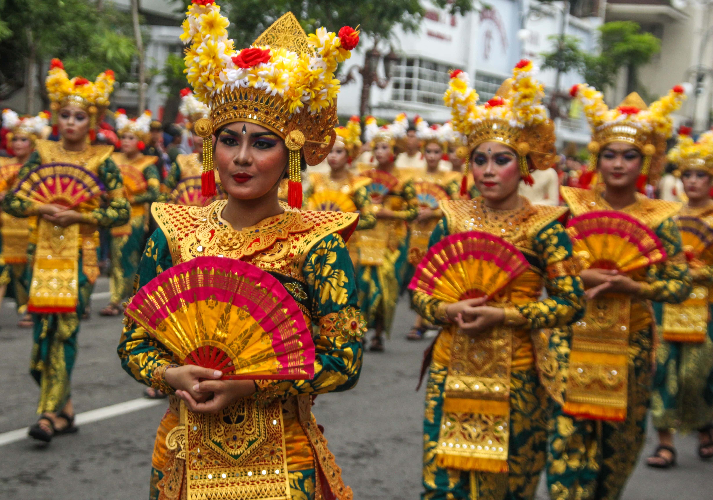
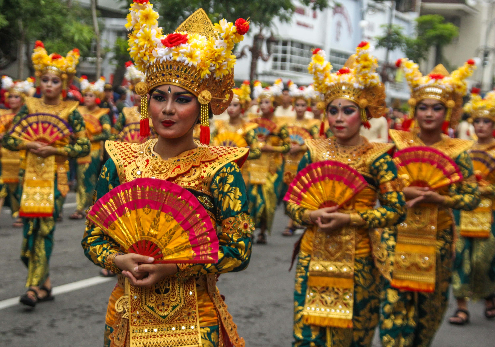
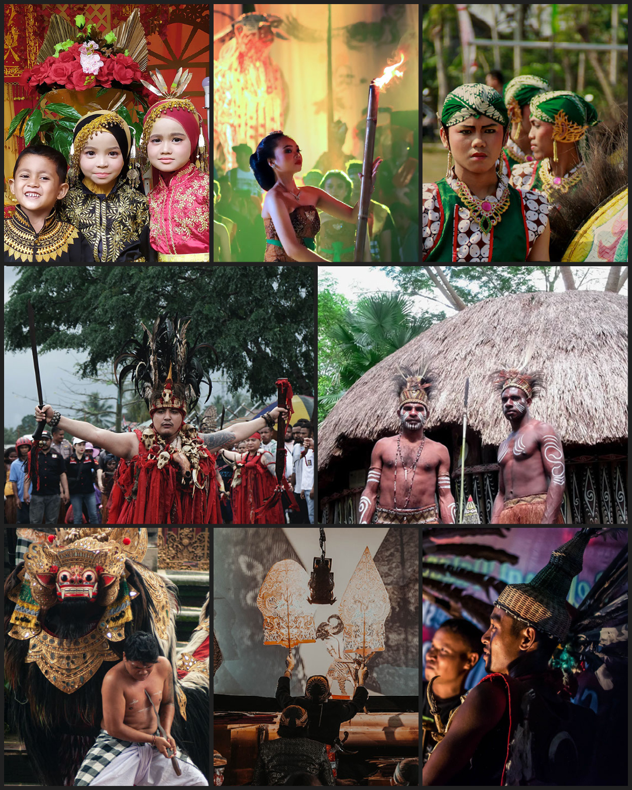

-min.jpg) 

Budayaku
Indonesiaku
Jelajahi kekayaan nusantara kita
Scroll down
Seberapa Beragamkah Indonesia?
Indonesia merupakan negara kepulauan di mana setiap daerahnya dihiasi dengan kebudayaan yang berbeda. Hal ini mendatangkan harta kekayaan budaya yang berlimpah.
17.508
Jumlah pulau
1.340
Jumlah suku
Menurut Rough Guides
Indonesia telah menduduki peringkat ke-6 Negara Terindah di Dunia pada Tahun 2019
Selain bentang alam yang mempesona, daya tarik Indonesia juga terletak pada budaya yang beraneka ragam.
Adat istiadat yang unik, tari-tarian yang indah, serta karya kerajinan yang bernilai tinggi, memikat hati wisatawan yang berkunjung.
Berkat keberagaman budaya ini, nama Indonesia sudah tidak asing lagi di mancanegara.
Berbagai macam kebudayaan
Setiap daerah memiliki ciri khas kebudayaan tersendiri yang memperkaya warisan kekayaan nusantara
-
Rumah Adat
-
Pakaian Adat
-
Upacara Adat
-
Seni Musik
-
Seni Rupa
-
Seni Tari
-
Senjata Tradisional
-
Suku Bangsa
-
Bahasa Daerah
-
Rumah Adat
-
Pakaian Adat
-
Upacara Adat
-
Seni Musik
-
Seni Rupa
Meskipun adanya perbedaan yang mencolok di setiap daerah, namun persatuan masih bisa tercapai dengan adanya sikap toleransi
Perbedaan bukanlah alasan perselisihan, melainkan suatu anugerah terindah. Tentu, anugerah ini hanya dapat diwujudkan dengan menumbuhkan sikap toleransi.
Menghargai dan mencintai perbedaan memperkokoh rasa persatuan seluruh Indonesia.
Dengan berjuta keragaman budaya yang ada, akan sungguh disayangkan apabila generasi muda tidak melestarikannya dengan baik.
Jaga dan Wariskanlah Identitas Bangsa
Harta ini telah diwariskan dan sampai di tangan kalian. Berbagai upaya dapat dilakukan untuk mempertahankan budaya bangsa.
Mulailah mempelajari dan turut serta mengenalkan keindahan budaya Indonesia kepada dunia. Ayo ambil peranmu menjaga budaya kita untuk generasi mendatang.
Semuanya dari Sabang sampai Merauke
Marilah kita mempererat rasa persatuan, bersama mencintai dan melestarikan budaya bangsa
Untukanak cucu Indonesiakita
BERSATU DALAM
KEBERAGAMAN

BHINNEKA
TUNGGAL IKA
GALERI NUSANTARA
-

1. Aceh -

2. Sumatera Utara -

3. Sumatera Barat -

4. Riau -

5. Kepulauan Riau -

6. Jambi -

7. Bengkulu -

8. Sumatera Selatan -

9. Kepulauan Bangka Belitung -

10. Lampung -

11. Jakarta -

12. Banten -

13. Jawa Barat -

14. Jawa Tengah -

15. Daerah Istimewa Yogyakarta -

16. Jawa Timur -

17. Bali -
1. Aceh -
2. Sumatera Utara -
3. Sumatera Barat -
4. Riau -
5. Kepulauan Riau -
6. Jambi -
7. Bengkulu -
8. Sumatera Selatan -
9. Kepulauan Bangka Belitung -
10. Lampung -
11. Jakarta -
12. Banten -
13. Jawa Barat -
14. Jawa Tengah -
15. Daerah Istimewa Yogyakarta -
16. Jawa Timur -
17. Bali
-

18. Nusa Tenggara Barat -

19. Nusa Tenggara Timur -

20. Kalimantan Barat -

21. Kalimantan Tengah -

22. Kalimantan Selatan -

23. Kalimantan Timur -

24. Kalimantan Utara -

25. Sulawesi Utara -

26. Gorontalo -

27. Sulawesi Tengah -

28. Sulawesi Barat -

29. Sulawesi Selatan -

30. Sulawesi Tenggara -

31. Maluku Utara -

32. Maluku -

33. Papua Barat -

34. Papua -
18. Nusa Tenggara Barat -
19. Nusa Tenggara Timur -
20. Kalimantan Barat -
21. Kalimantan Tengah -
22. Kalimantan Selatan -
23. Kalimantan Timur -
24. Kalimantan Utara -
25. Sulawesi Utara -
26. Gorontalo -
27. Sulawesi Tengah -
28. Sulawesi Barat -
29. Sulawesi Selatan -
30. Sulawesi Tenggara -
31. Maluku Utara -
32. Maluku -
33. Papua Barat -
34. Papua